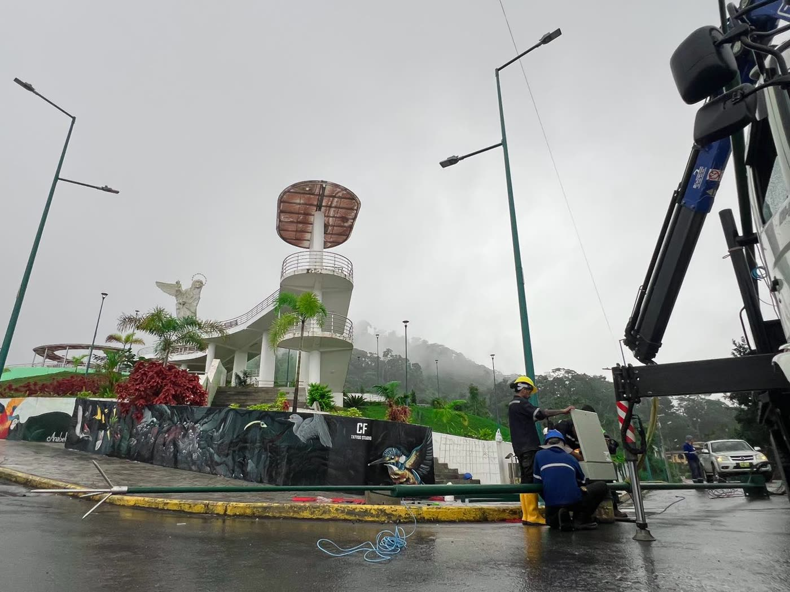
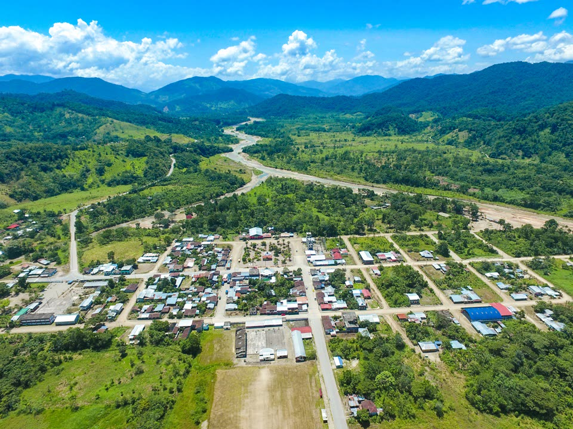
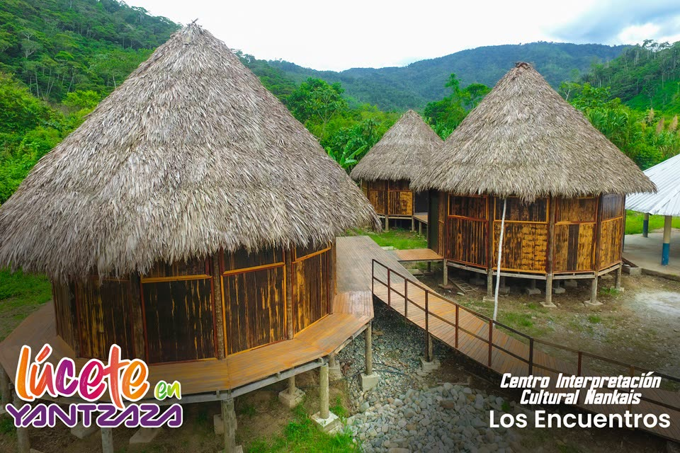
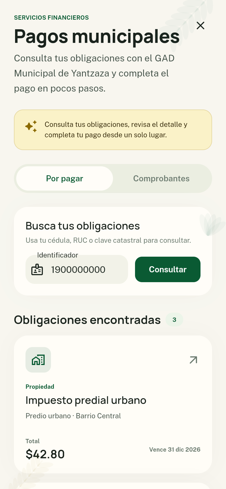

MI
YANTZAZAciudad cercana
YANTZAZAciudad cercana
Propuesta de gobierno municipal
Mi
Yantzaza
La ciudad que te escucha, te informa y te acompaña.
La ciudad que te escucha, te informa y te acompaña.

Mi Yantzaza pone la tecnología al servicio de las personas para que la gestión municipal sea más clara, sencilla y accesible.



Una guía para disfrutar balnearios, cascadas de Chicaña, ayampacos y lugares turísticos.


La identidad de Yantzaza vive en sus comunidades shuar, saraguro y mestiza, en la luciérnaga de su escudo y en la riqueza amazónica que compartimos.
Mi Yantzaza: una propuesta para construir una ciudad más conectada, transparente y cercana.
Conoce la propuestaUna experiencia sencilla para atender, informar y conectar a la ciudadanía.


